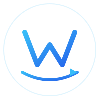
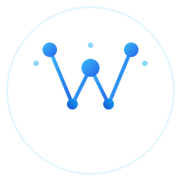
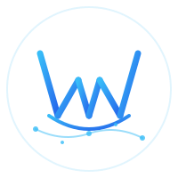

Propuestas de Logotipo

La letra M formada con trazos dinámicos, acompañada de una flecha de ciclo que representa automatización y procesos continuos. Simple, tecnológico y directo.

Una M construida mediante nodos interconectados, representando datos, redes y sistemas. Las partículas orbitantes refuerzan la idea de flujo de información.

Una M que es también un puente, con un arco inferior y pilares. Representa conexión entre sistemas, datos y personas. Pequeños puntos de datos fluyen bajo el puente.